Document Control
| Version | Date | Action | Remark |
|---|---|---|---|
| 1.0 | 16 Nov 2026 | จัดทำเอกสารอบรมฉบับแรก | ครอบคลุมทุกฟังก์ชันการใช้งาน ยกเว้นการจัดการผู้ใช้ กลุ่ม และสิทธิ์ ซึ่งอยู่ในคู่มือสำหรับทีม ITSD |
| 1.1 | 16 Nov 2026 | แก้ไขภาพหน้าจอที่ติด notice modal | ภาพรูป 3.1 ถึง 3.7 และรูป 4.2 ถึง 4.3 ถ่ายใหม่หลังกดปุ่มรับทราบข้อควรปฏิบัติสำหรับผู้ปฏิบัติงานแล้ว เพื่อไม่ให้ม่านข้อความบังหน้าจอ |
บทที่ 1 การเข้าสู่ระบบและการใช้งานเบื้องต้น
ระบบ UBO Verification System ใช้บัญชีพนักงาน (Employee ID) ที่เชื่อมกับไดเรกทอรีของธนาคารในการเข้าสู่ระบบ หน้าจอทั้งหมดรองรับภาษาไทยและภาษาอังกฤษ สามารถสลับภาษาได้จากมุมขวาบนของหน้าจอ
1.1 ขั้นตอนการเข้าสู่ระบบ
- 1. เปิดเว็บเบราว์เซอร์แล้วไปที่ที่อยู่ระบบของ UBO Verification System
- 2. หน้าแรกเป็นช่องกรอกอีเมลและรหัสผ่านของแพลตฟอร์ม ให้กรอกอีเมลและรหัสผ่านที่ได้รับ แล้วกดปุ่ม เข้าสู่ระบบ
- 3. ระบบจะพาไปหน้าเข้าสู่ระบบของ UBO ให้กรอก Employee ID เช่น P9999 พร้อมรหัสผ่าน แล้วกดปุ่ม เข้าสู่ระบบ
- 4. เมื่อเข้าสำเร็จ ระบบจะพาเข้าสู่หน้าหลัก UBO Analysis พร้อมเมนู UBO Analysis, History, Waiting และ Settings ที่ด้านบนของหน้าจอ
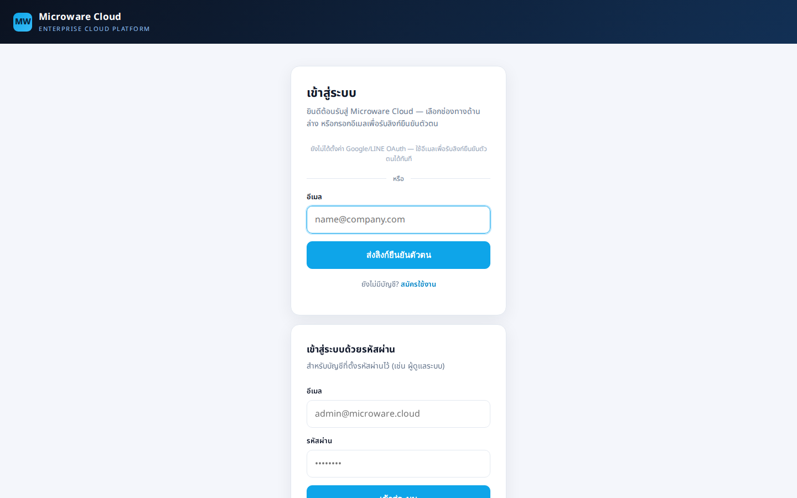


หากลืมรหัสผ่านให้ติดต่อทีม ITSD เพื่อขอรีเซ็ตรหัสผ่าน การเข้าสู่ระบบผิดพลาดจะถูกบันทึกลง System Log เพื่อใช้ตรวจสอบภายหลัง
1.2 สลับภาษาและออกจากระบบ
- 1. สลับภาษา: คลิกปุ่ม TH หรือ EN ที่มุมขวาบนของหน้าจอ ข้อความทั้งระบบจะเปลี่ยนทันที
- 2. ออกจากระบบ: คลิกชื่อผู้ใช้ที่มุมขวาบน แล้วเลือก Logout แนะนำให้ออกจากระบบทุกครั้งเมื่อใช้งานเสร็จ โดยเฉพาะเครื่องที่ใช้งานร่วมกัน
บทที่ 2 การค้นหาและวิเคราะห์ UBO
หน้า UBO Analysis เป็นหน้าหลักสำหรับค้นหาผู้ถือหุ้นส่วนใหญ่ โดยกรอกเลขทะเบียนนิติบุคคล 13 หลักของบริษัทที่ต้องการตรวจสอบ
2.1 ขั้นตอนการค้นหา
- 1. ไปที่เมนู UBO Analysis ที่ด้านบนของหน้าจอ
- 2. กรอกเลขทะเบียนนิติบุคคล 13 หลักในช่องค้นหา ระบบจะรับเฉพาะตัวเลขเท่านั้น
- 3. กดปุ่ม เริ่มวิเคราะห์ เพื่อเริ่มการค้นหา
- 4. รอสักครู่ระหว่างที่ระบบดึงข้อมูล เมื่อเสร็จจะแสดงผลการวิเคราะห์ที่หน้าเดียวกัน

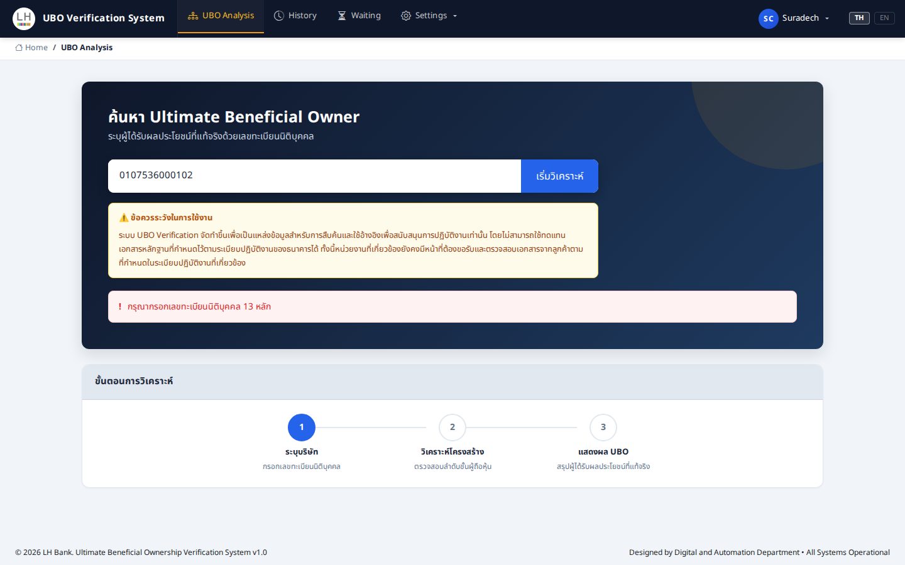
2.2 กรณีที่กรอกข้อมูลไม่ถูกต้อง
หากกรอกเลขทะเบียนไม่ครบ 13 หลัก ระบบจะแสดงข้อความ กรุณากรอกเลขทะเบียนนิติบุคคล 13 หลัก ใต้ช่องกรอก และไม่ดำเนินการค้นหา
2.3 กรณีไม่พบข้อมูลบริษัท
หากเลขทะเบียนที่กรอกไม่มีในฐานข้อมูล ระบบจะแสดงข้อความแจ้งว่าไม่พบข้อมูล ให้ตรวจสอบเลขทะเบียนอีกครั้ง หรือติดต่อทีมที่เกี่ยวข้อง

บทที่ 3 ผลการวิเคราะห์และการพิมพ์รายงาน
หน้าผลการวิเคราะห์แสดงผลลัพธ์ครบทุกส่วน ตั้งแต่หัวข้อผล ข้อมูลบริษัท ตารางผู้ถือหุ้น Ownership Graph รายชื่อกรรมการ ผู้มีอำนาจลงนาม รวมถึงปุ่มพิมพ์รายงาน
3.1 หัวข้อผลการวิเคราะห์
ด้านบนสุดแสดงชื่อบริษัท เลขทะเบียน สถานะผลลัพธ์ วันที่อัปเดตข้อมูล และแถบสถานะว่าผลลัพธ์มาจาก การค้นหาครั้งล่าสุดหรือจากประวัติการค้นหา ปุ่ม ค้นหาใหม่ ใช้กลับไปหน้าค้นหา และปุ่ม พิมพ์รายงาน ใช้สร้างเอกสาร PDF

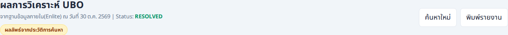
3.2 ข้อมูลบริษัทและตารางผู้ถือหุ้น
เลื่อนลงมาเป็นส่วนข้อมูลบริษัท เช่น ชื่อบริษัทภาษาไทย และภาษาอังกฤษ เลขทะเบียน ตามด้วยตารางผู้ถือหุ้นซึ่งแบ่งเป็น 2 มุมมอง ได้แก่ HELD BY แสดงผู้ถือหุ้นเรียงตามลำดับ และ HOLD SHARE แสดงสัดส่วนการถือหุ้น พร้อมตัวกรองระดับ LEVEL 1, LEVEL 2 และ LEVEL 3
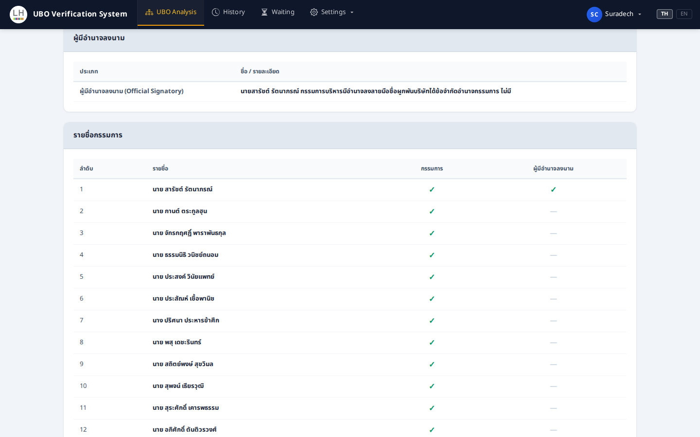
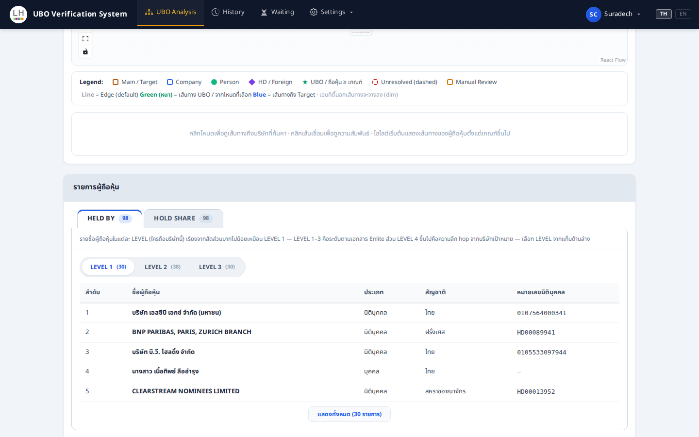
3.3 Ownership Graph
Ownership Graph แสดงความสัมพันธ์การถือหุ้นเป็นรูปภาพ ปุ่ม Fit Graph ปรับกรอบภาพให้พอดีหน้าจอ ปุ่ม Reset View คืนค่ามุมมองเริ่มต้น ปุ่ม Default view กลับมุมมองมาตรฐาน แผงด้านข้างแสดงรายการผู้ถือหุ้นตาม LEVEL และรายการเส้นทาง UBO พร้อมดาว คลิกที่รายการเพื่อเน้นเส้นทางของรายนั้น สีของโหนดแบ่งตามประเภท เช่น สีส้มคือบริษัทเป้าหมาย สีฟ้าคือบริษัท สีเขียวคือบุคคล

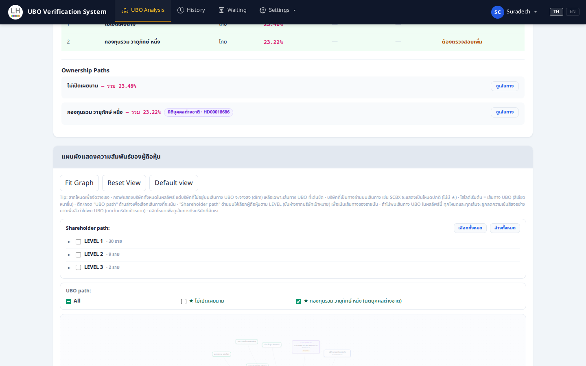
3.4 รายชื่อกรรมการและผู้มีอำนาจลงนาม
เลื่อนลงมาล่างสุดเป็นตารางรายชื่อกรรมการ และผู้มีอำนาจลงนาม แสดงชื่อบุคคลหรือนิติบุคคล สัญชาติ สัดส่วน %UBO และสิ่งที่ต้องดำเนินการ

3.5 การพิมพ์รายงาน PDF
- 1. ที่หัวข้อผลการวิเคราะห์ คลิกปุ่ม พิมพ์รายงาน
- 2. ระบบจะสร้างเอกสาร PDF และแสดงตัวอย่างในหน้าต่างใหม่ พร้อมข้อความยืนยันพร้อมเลขที่เอกสาร เช่น Document ID
- 3. ในหน้าต่าง PDF สามารถกดพิมพ์หรือบันทึกไฟล์ลงเครื่องได้
- 4. ทุกครั้งที่กดพิมพ์ ระบบจะสร้างเลขที่เอกสารใหม่ แม้จะเป็นบริษัทเดิมก็ตาม
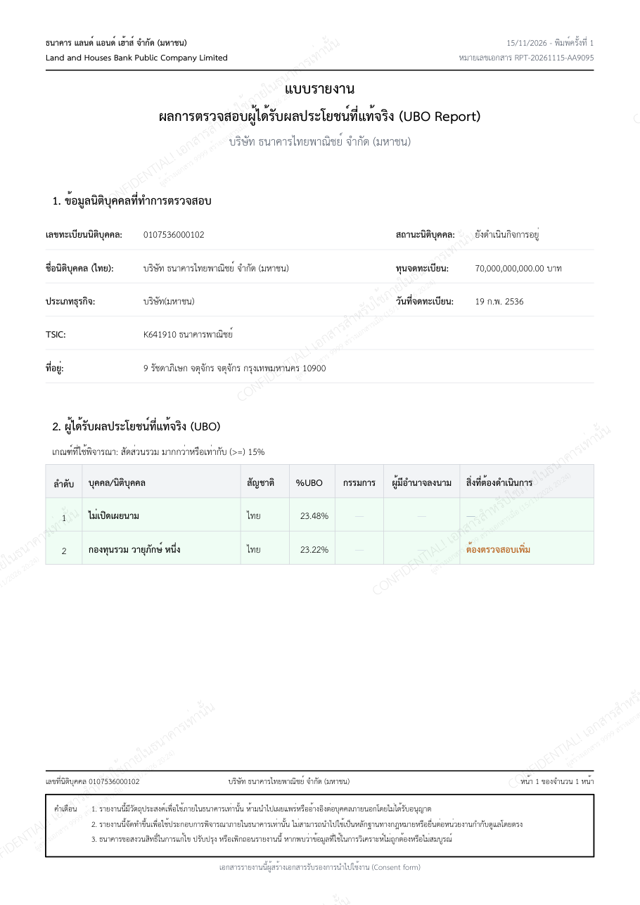
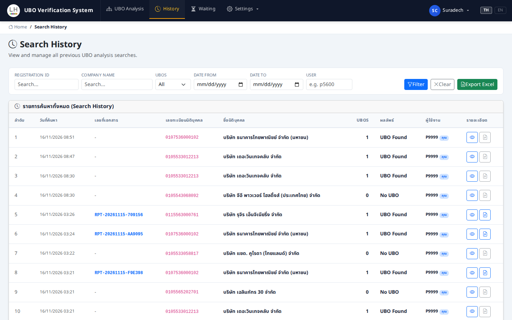
บทที่ 4 ประวัติการค้นหา
หน้า History แสดงรายการค้นหาทั้งหมดที่เคยทำไว้ ใช้สำหรับตรวจสอบย้อนหลังและเปิดผลลัพธ์เดิมซ้ำได้
4.1 การดูรายการและกรองผล
- 1. ไปที่เมนู History ที่ด้านบนของหน้าจอ
- 2. รายการค้นหาจะแสดงเป็นตาราง ประกอบด้วยวันที่ค้นหา เลขที่เอกสาร เลขทะเบียนนิติบุคคล ชื่อนิติบุคคล ผลลัพธ์ และผู้ใช้งาน
- 3. คลิกปุ่ม Filter เพื่อกรองตามเลขทะเบียน ชื่อบริษัท หรือช่วงวันที่ แล้วกด Apply ปุ่ม Clear ใช้ล้างตัวกรอง
- 4. คลิกปุ่ม Export Excel เพื่อดาวน์โหลดรายการเป็นไฟล์ Excel


4.2 การเปิดดูรายละเอียด
- 1. ในแถวของรายการที่ต้องการ คลิกปุ่มรูปตาที่คอลัมน์ด้านขวาสุด เพื่อเปิดหน้าผลการวิเคราะห์ของรายการนั้น
- 2. หน้ารายละเอียดแสดงผลลัพธ์จากข้อมูลที่บันทึกไว้ พร้อม Ownership Graph และตารางผู้ถือหุ้น
- 3. กลับมาที่หน้า History ได้ตลอดเวลา โดยคลิกเมนู History ที่ด้านบน

4.3 การเปิดเอกสารรายงาน PDF เดิม
- 1. ในแถวของรายการที่เคยพิมพ์รายงานแล้ว คลิกปุ่มรูปเอกสารที่คอลัมน์ด้านขวาสุด ปุ่มจะเป็นสีเทาหากยังไม่เคยพิมพ์รายงาน
- 2. ระบบจะเปิดหน้าต่างใหม่แสดงเอกสาร PDF เดิม สามารถกดพิมพ์หรือบันทึกได้ทันที
- 3. หากแถวนั้นมีเอกสารมากกว่า 1 ฉบับ ระบบจะแสดงรายการเอกสารให้เลือกก่อนเปิด
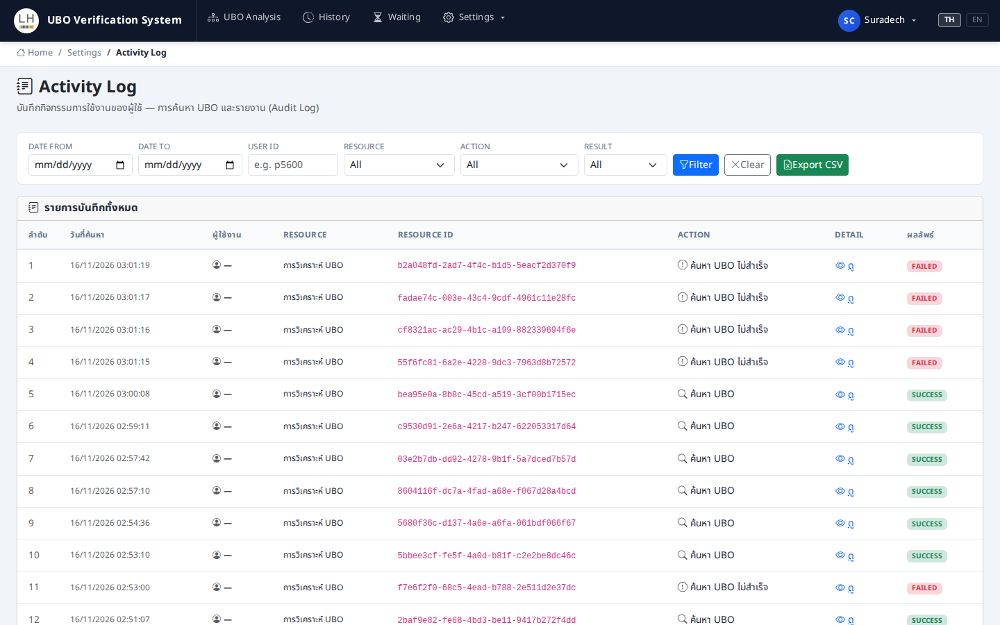
บทที่ 5 Activity Log และ System Log
ระบบบันทึกกิจกรรมไว้ 2 ส่วน Activity Log สำหรับบันทึกการใช้งานทั่วไป เช่นการค้นหาและการพิมพ์รายงาน System Log สำหรับบันทึกระบบ เช่นการเข้าสู่ระบบ และการแก้ไขการตั้งค่า ทั้งสองส่วนค้นหาและ Export ได้
5.1 Activity Log
- 1. ไปที่เมนู Settings แล้วเลือก Activity Log
- 2. ตารางแสดงวันที่ ผู้ใช้งาน ประเภทกิจกรรม รหัสรายการ รายละเอียด และผลลัพธ์
- 3. คลิกปุ่ม Filter เพื่อกรองตามช่วงวันที่ ผู้ใช้งาน หรือผลลัพธ์สำเร็จและไม่สำเร็จ คลิกปุ่ม ดู ที่แถวใดก็ได้เพื่อดูรายละเอียด
- 4. คลิกปุ่ม Export CSV เพื่อดาวน์โหลดข้อมูลเป็นไฟล์ CSV

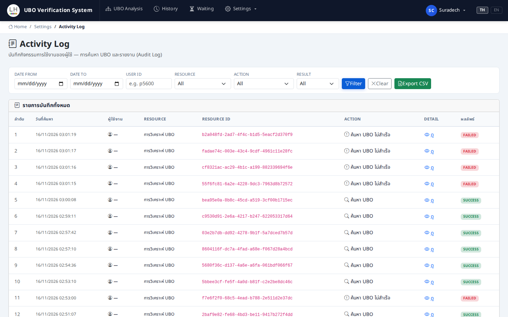
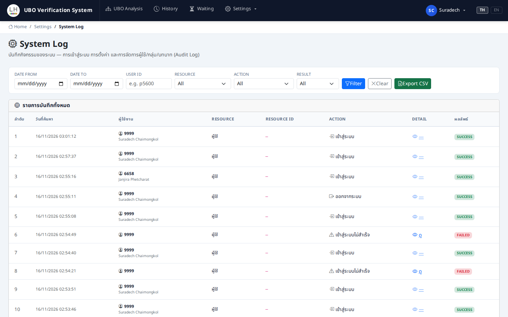
5.2 System Log
- 1. ไปที่เมนู Settings แล้วเลือก System Log
- 2. ตารางแสดงเหตุการณ์ระบบ เช่นการเข้าสู่ระบบสำเร็จ เข้าสู่ระบบไม่สำเร็จ และการแก้ไขการตั้งค่า
- 3. ใช้ Filter และปุ่ม ดู ได้เช่นเดียวกับ Activity Log
- 4. คลิกปุ่ม Export CSV เพื่อดาวน์โหลดข้อมูลเป็นไฟล์ CSV


บทที่ 6 การตั้งค่าระบบ
เมนู Settings รวมการตั้งค่าต่าง ๆ ของระบบ การแก้ไขบางส่วนจำกัดเฉพาะผู้ดูแลระบบ ส่วนที่ผู้ใช้งานทั่วไปควรทำความเข้าใจ จะอธิบายในบทนี้ตามลำดับหน้าจอ
6.1 Configuration การตั้งค่าเกณฑ์และการยกเว้น
หน้า Configuration แสดงเกณฑ์ที่ใช้ในการวิเคราะห์ 2 รายการ ได้แก่ เกณฑ์ UBO ร้อยละ และเกณฑ์การ traverse ร้อยละ แต่ละรายการมีค่าร้อยละและเงื่อนไขเปรียบเทียบ พร้อมวันที่แก้ไขล่าสุด ส่วนด้านล่างเป็นรายการผู้ที่ได้รับการยกเว้นการตรวจสอบ UBO สามารถอัปโหลดไฟล์รายชื่อแทนที่ของเดิม ดาวน์โหลดรายชื่อปัจจุบัน หรือลบทั้งหมดได้
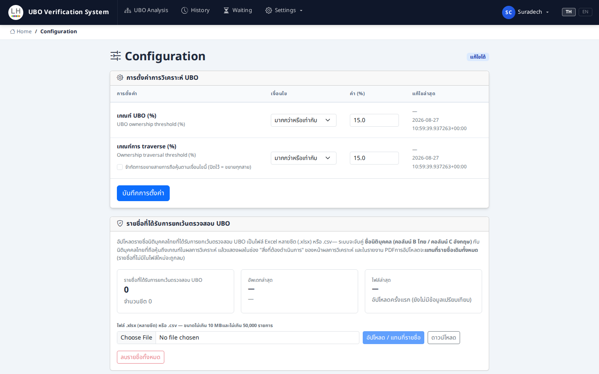
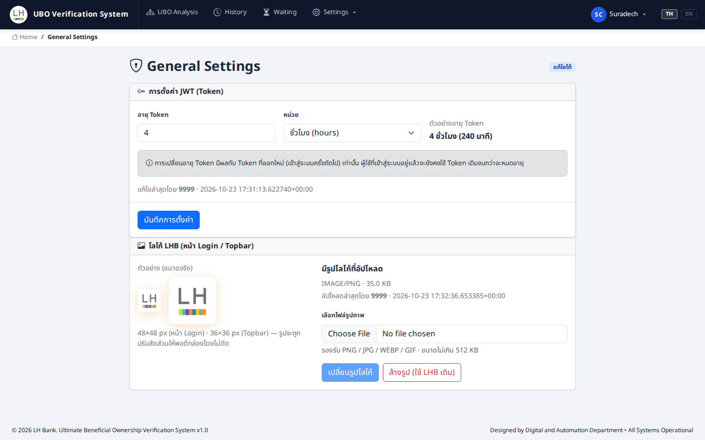
การแก้ไขเกณฑ์และการจัดการรายชื่อการยกเว้น เป็นสิทธิ์ของผู้ดูแลระบบ ผู้ใช้งานทั่วไปควรติดต่อ ผู้ดูแลระบบหากต้องการปรับค่า
6.2 General Settings การตั้งค่าทั่วไป
หน้า General Settings ประกอบด้วย 2 ส่วน ส่วนแรกคืออายุของ JWT Token ที่ใช้กำหนดระยะเวลา ที่ผู้ใช้คงสถานะการเข้าสู่ระบบ ส่วนที่สองคือรูปโลโก้ระบบ สามารถเปลี่ยนรูปโลโก้ใหม่ หรือล้างรูปเพื่อกลับไปใช้โลโก้ LHB เดิมได้ กดปุ่ม บันทึกการตั้งค่า เพื่อใช้ค่าใหม่

6.3 Waiting Page Setting ข้อความหน้ารอ
หน้า Waiting Page Setting ใช้แก้ข้อความ ที่แสดงบนหน้าจอของผู้ใช้ที่ยังไม่ได้รับการกำหนดสิทธิ์ แก้ไขเสร็จกดปุ่ม บันทึกข้อความ ปุ่ม Reset เป็นค่าเริ่มต้น ใช้คืนข้อความเดิมของระบบ
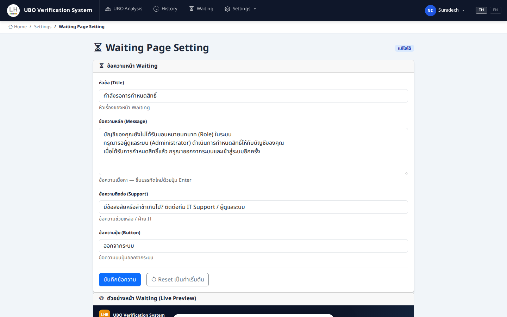
6.4 API Configuration การตั้งค่าการเชื่อมต่อ
หน้า API Configuration แสดงค่าการเชื่อมต่อภายนอก ประกอบด้วย Endpoint URL, API Key และ Timeout แต่ละรายการแสดงค่าที่บันทึกไว้ แหล่งที่มา ผู้ที่แก้ไข และเวลาที่แก้ไข ปุ่ม แก้ไข ใช้เปิดการแก้ไขค่า ปุ่ม ล้างค่า ใช้กลับไปใช้ค่าจาก Environment ปุ่ม ทดสอบการเชื่อมต่อ ใช้ตรวจสอบว่าระบบ เชื่อมต่อภายนอกได้สำเร็จหรือไม่

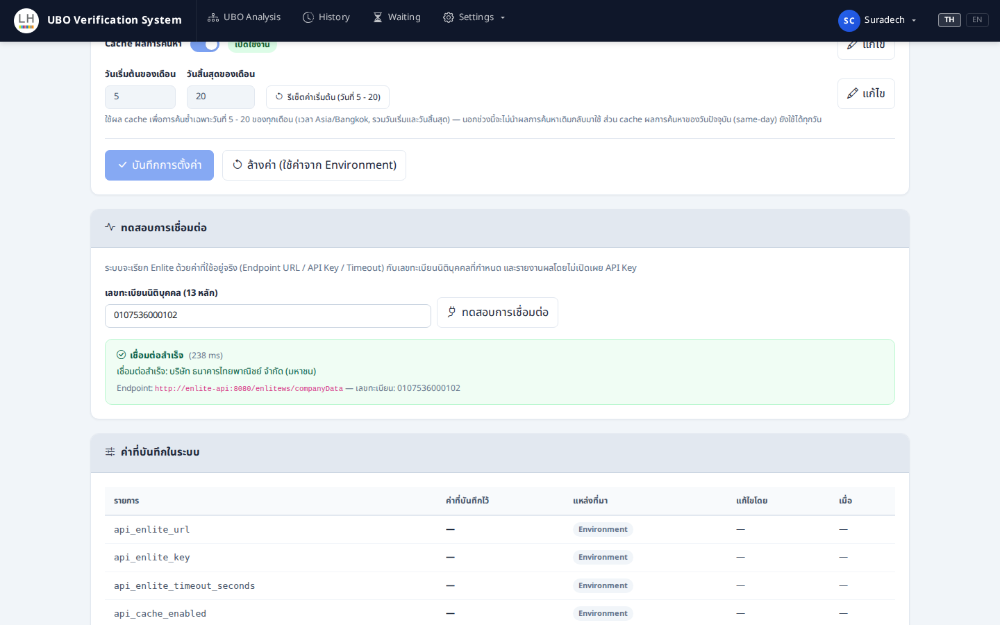
ด้านล่างของหน้าเดียวกันเป็นส่วน Cache Setting สำหรับเปิดหรือปิดการใช้งานแคช กำหนดวันที่ และปุ่มรีเซ็ตค่าเริ่มต้นของวันที่
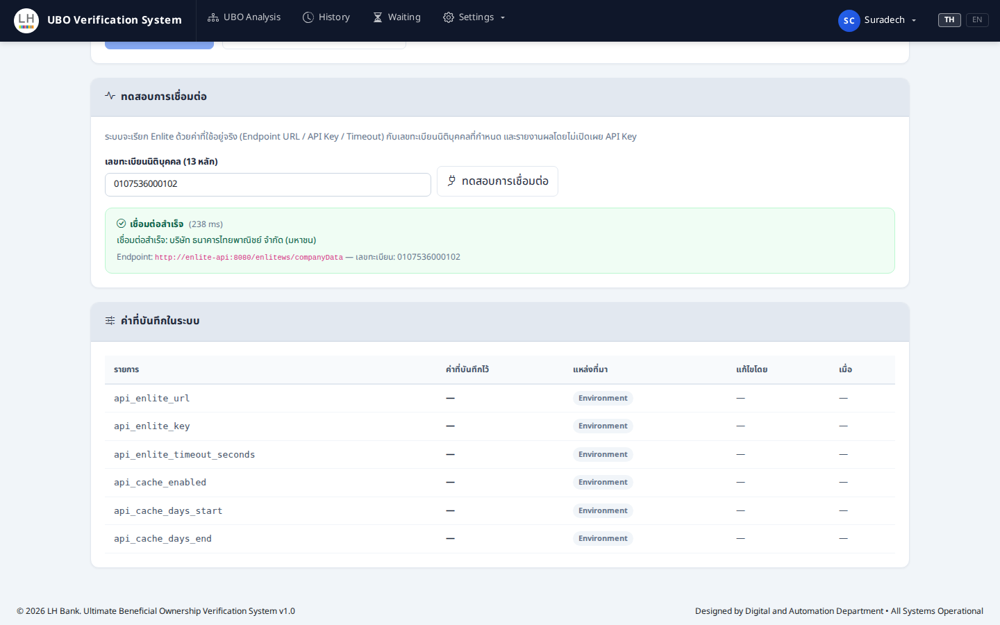
หน้า User List, User Groups และ Roles & Features เป็นหน้าสำหรับจัดการผู้ใช้และสิทธิ์ อธิบายไว้ในคู่มือสำหรับทีม ITSD ไม่ได้อธิบายในคู่มือฉบับนี้
บทที่ 7 หมายเหตุสำหรับผู้ใช้งาน
7.1 เมนูที่เห็นขึ้นอยู่กับสิทธิ์
ระบบจะแสดงเมนูตามสิทธิ์ที่ผู้ดูแลระบบกำหนดไว้ หากผู้ใช้ยังไม่ได้รับการกำหนดสิทธิ์ จะเห็นหน้าจอรอการกำหนดสิทธิ์แทนเมนูที่ใช้งานได้ ให้ติดต่อผู้ดูแลระบบหรือทีม ITSD
7.2 หน้าจอรอการกำหนดสิทธิ์
หากเข้าสู่ระบบแล้วพบหน้าข้อความว่า กำลังรอการกำหนดสิทธิ์ หมายความว่า บัญชีของท่านยังไม่ได้รับมอบหมายบทบาทในระบบ เมื่อผู้ดูแลกำหนดสิทธิ์แล้ว ให้ออกจากระบบและเข้าสู่ระบบใหม่อีกครั้ง
7.3 ติดต่อฝ่ายสนับสนุน
- ปัญหาการเข้าสู่ระบบหรือรหัสผ่าน: ติดต่อทีม ITSD
- ปัญหาข้อมูลผลการวิเคราะห์: ติดต่อทีมที่ดูแลข้อมูล
- ขอปรับเกณฑ์หรือจัดการรายชื่อการยกเว้น: ติดต่อผู้ดูแลระบบ
- ขอสิทธิ์การใช้งานเพิ่มเติม: แจ้งผู้ดูแลระบบตามขั้นตอนในคู่มือทีม ITSD